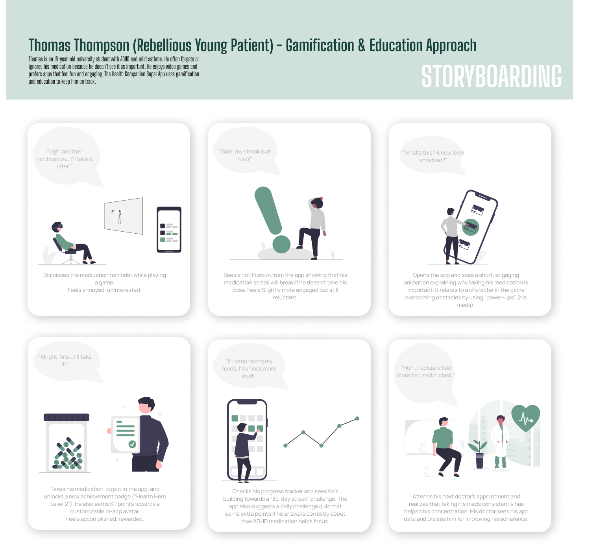

Introduction
The CareMate Super App is designed to help individuals manage their medications and doctor appointments efficiently. This case study explores the UX/UI design process behind its development.
The Problem
Many individuals with chronic illnesses struggle with medication adherence and appointment management. Research shows that:
- 50% of patients do not take their medication as prescribed.
- Missed doctor appointments contribute to poor health outcomes.
- Lack of understanding about medication importance leads to low adherence.
Research & Insights
To better understand user needs, I conducted a survey specifically for healthcare professionals. My brother, a doctor, shared the survey with colleagues from different hospitals and workplaces.
Survey Participants
I gathered 6 responses from different healthcare roles:
- 👨‍⚕️ 3 Doctors
- 💊 1 Pharmacist
- 🥠1 Nurse
- 🦿 1 Physical Therapist
Key Findings
- 📌 100% of participants agreed that receiving alerts for frequent missed medications would be useful.
- 📌 Medication adherence is primarily tracked through:
- Direct patient check-ins (80%)
- Self-reported data (80%)
- Pharmacy refill history (60%)
- Electronic health records (40%)
- 📌 The most common reasons for missed medication were:
- 💡 Lack of understanding about medication importance (100%)
- 😷 Side effects (50%)
- 🤯 Simply forgetting (83.3%)
- 📌 Challenges with doctor appointment booking:
- ⏳ Long waiting times (83.3%)
- 📅 Lack of available slots (83.3%)
- ❗ Complicated booking systems (33.3%)
- 📌 Top requested features for a health companion app:
- 💊 Medication tracking (83.3%)
- 📆 Appointment reminders (83.3%)
- 📈 Patient progress tracking (66.7%)
- 🔒 Secure messaging with doctors (50%)
Concerns & Feedback
Healthcare workers expressed concerns about patient confidentiality, data security, and accessibility for older patients. Some also suggested adding features beyond medication tracking, such as physiotherapy reminders.
Survey Results
Here are some of the key charts from the survey:


User Personas
We created personas to represent different user types:
User Journey Mapping

Storyboard
Thomas’s journey from ignoring medication to engaging with gamification features.

User Flow Diagram
A visual representation of how users navigate the app.
Wireframes & Prototype
Our design process started with low-fidelity wireframes and evolved into a fully interactive prototype.


🨠View the full prototype
Sketches
Before digital wireframing, we created hand-drawn sketches to outline the app’s core functionality.


Color Palette & Design System
To create a clean, modern, and accessible interface, I selected a soothing color palette that enhances readability and usability.
#16423C
Dark Green (Primary)
#6A9C89
Muted Green (Secondary)
#C4DAD2
Soft Mint (Accent)
#E9EFEC
Light Grayish Green (Background)
Typography
The selected typography balances modern readability and accessibility. I used:
- Body Text & Headers: Arial, sans-serif
- Alternative Option: Open Sans or Nunito for a softer look
Design Considerations
- ✅ High Contrast: Ensures readability for all users.
- ✅ Accessible Colors: Compliant with WCAG color contrast standards.
- ✅ Minimalist Aesthetic: Clean, professional, and healthcare-friendly.
Usability Testing & Iterations
We conducted usability tests with target users and found:
- 🔴 Too many notifications → Added smart reminders.
- 🔴 Elderly users struggled with small buttons → Improved accessibility.
- 🔴 Doctors needed simplified insights → Created a quick-view dashboard.
Final Design & Visual System

Future Enhancements & Key Takeaways
- 💡 AI-driven reminders for more personalized scheduling.
- 💡 Wearable device integration for real-time tracking.
- 💡 Multi-language support for global accessibility.